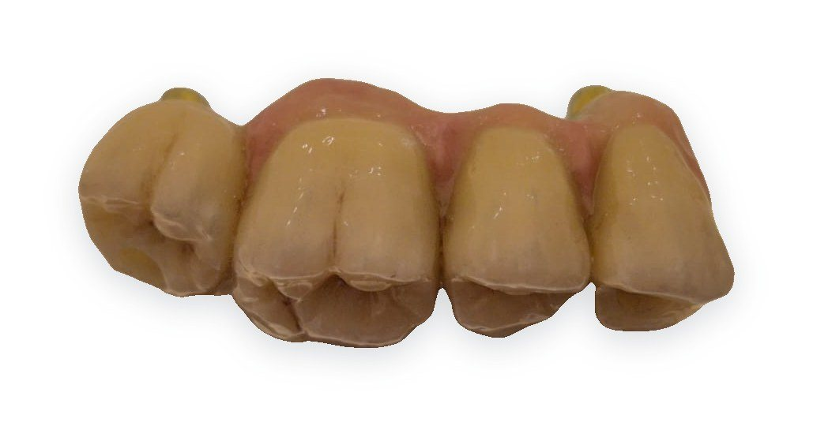
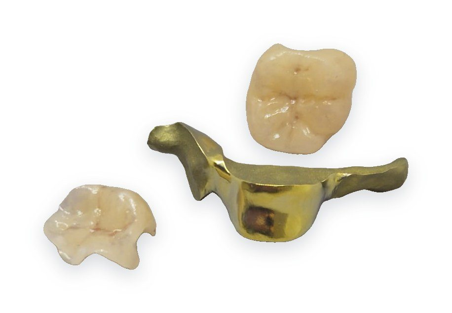
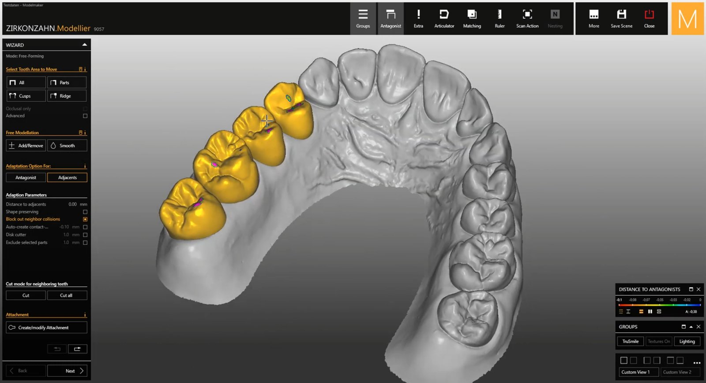
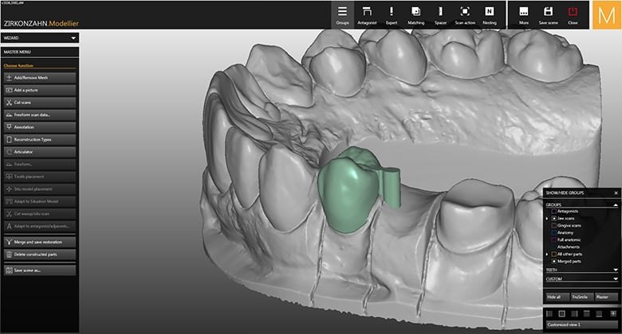
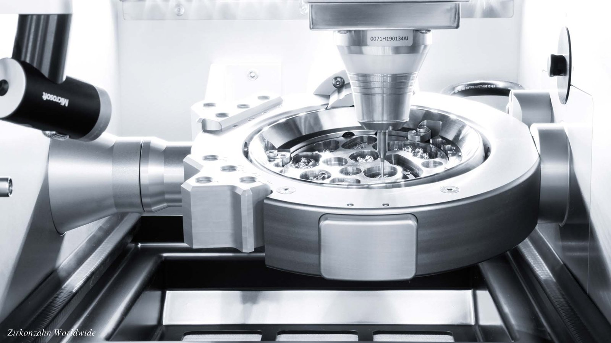
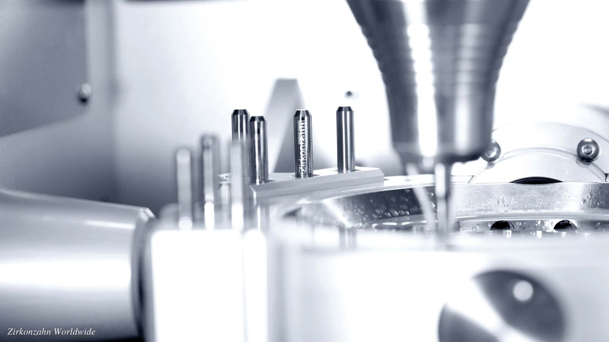

Digitální přesnost.
Lidský dotek.
Digitální zubní laboratoř v Praze-Holešovicích. Navrhujeme ve 3D, frézujeme na 5osé fréze Zirkonzahn M1 a ručně dokončujeme. Výsledek? Práce, která sedí napoprvé.
Od jedné korunky po celou čelist na implantátech.
Kompletní spektrum fixní i snímatelné protetiky pod jednou střechou. Bez externích dodavatelů, bez kompromisů v kvalitě.

Korunky a můstky
Prémiový zirkon Prettau® s přirozenou translucencí a barevným přechodem jako u vlastního zubu. Monolitické pro maximální pevnost, vrstvené pro nejvyšší estetiku.

Implantologická protetika
Šroubované korunky, individuální abutmenty a hybridní řešení na Ti-bázích. Přesné napojení, ideální emergenční profil a dlouhodobě stabilní výsledek.

All-on-4 / All-on-6
Celočelistní rekonstrukce na frézované titanové konstrukci. Lehké, pevné a esteticky přesvědčivé – nový úsměv, který pacient nepozná od vlastního.

Titanové konstrukce a bary
Frézováno z jednoho bloku titanu, bez pájení a bez pnutí. Pasivní dosedání na implantáty, které ocení každý implantolog.

Snímatelné náhrady
Celkové i částečné náhrady, skeletové konstrukce a opravy. Pohodlí pro pacienta, spolehlivost pro lékaře.

Dlahy, šablony, wax-up
Okluzní dlahy, chirurgické šablony pro navigovanou implantaci a diagnostické wax-upy, které ukážou výsledek dřív, než začne léčba.
Plně digitální postup. Každý krok pod kontrolou.
Každá práce vzniká nejdřív ve 3D.
Navrhujeme v softwaru Zirkonzahn.Modellier. Tvar, kontakty i skus vidíme na setiny milimetru, ještě než se fréza dotkne materiálu.


Špičková technologie zŠvýcarská přesnost? Jihotyrolská. Přímo v Holešovicích.#160;Jižního Tyrolska. Přímo v Holešovicích.
Pracujeme na 5osé fréze Zirkonzahn M1 – špičce digitální zubní techniky. Simultánní frézování v pěti osách zvládne podsekřiviny, šikmé šroubové kanálky i nejjemnější anatomii fisur. Výsledkem je dosedání, které sedí napoprvé. A protože fréza stojí přímo v laboratoři, máme kvalitu i termín plně ve svých rukou.
- Frézka
- Zirkonzahn M1
- Osy
- 5osé simultánní
- Materiály
- Zirkon · titan · PMMA · vosk
- Software
- [CAD SOFTWARE]



Detaily, které nejsou vidět. Dokud nechybí.


Tým zubních techniků, pro které je přesnost posedlost.
[Krátký příběh laboratoře – kdo ji vede, od kdy, s jakými ordinacemi spolupracuje.] S každou ordinací jednáme napřímo, bez prostředníků: technik, který práci navrhuje, je ten, komu voláte.
Vyzkoušejte, jak vypadá protetika bez kompromisů.
Pošlete STL nebo si objednejte svoz otisku. Do [24 h] se ozveme s termínem a cenou – a první práce vás přesvědčí víc než jakákoli slova.